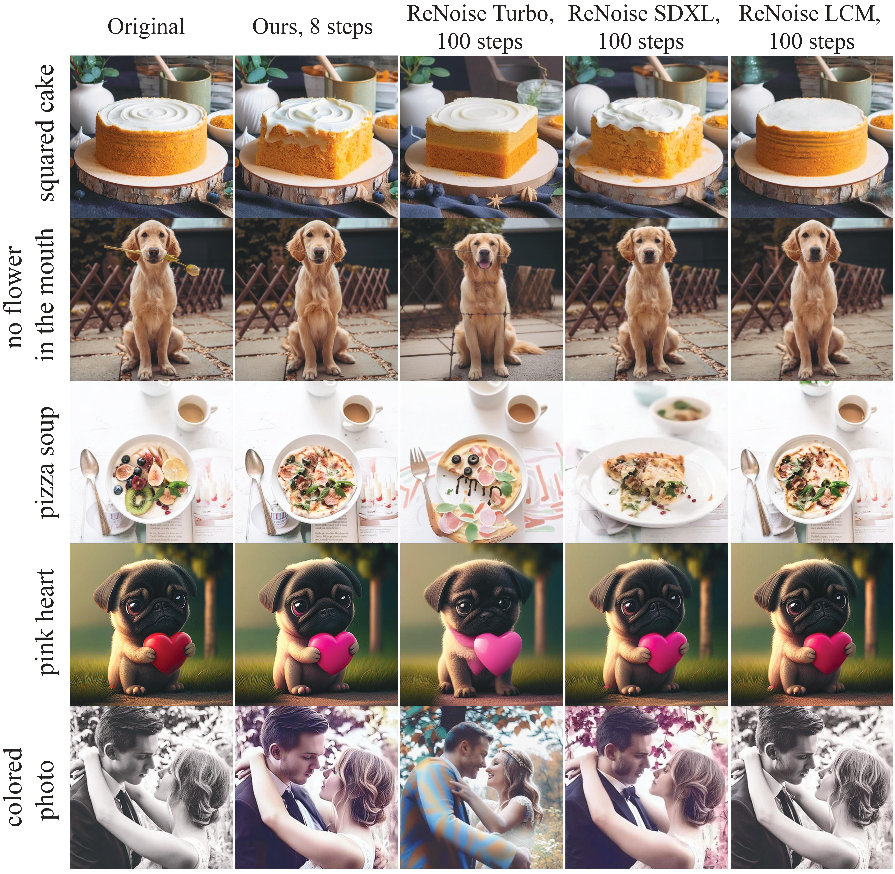
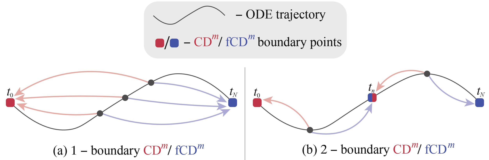
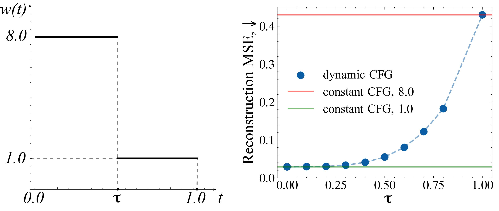
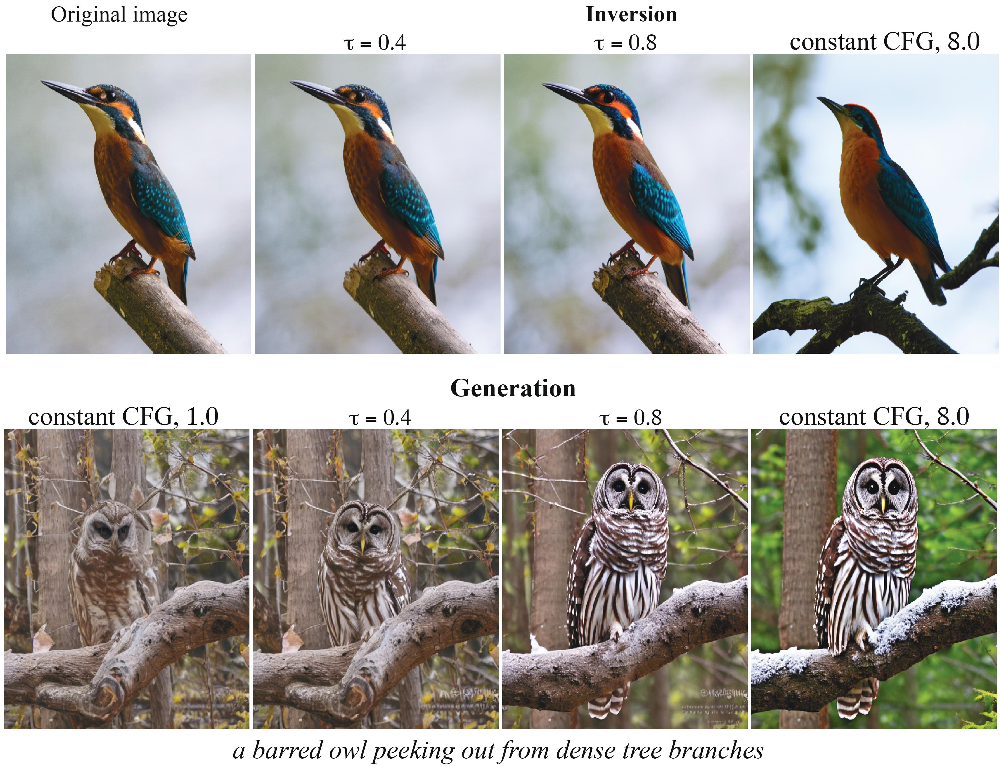
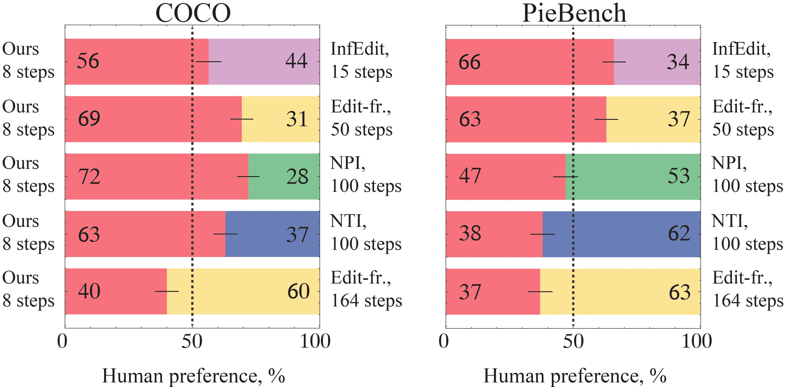

Qualitative comparisons under the SD1.5 model

Qualitative comparisons under the SDXL model

Diffusion distillation represents a highly promising direction for achieving faithful text-to-image generation in a few sampling steps. However, despite recent successes, existing distilled models still do not provide the full spectrum of diffusion abilities, such as real image inversion, which enables many precise image manipulation methods. This work aims to enrich distilled text-to-image diffusion models with the ability to effectively encode real images into their latent space. To this end, we introduce invertible Consistency Distillation (iCD), a generalized consistency distillation framework that facilitates both high-quality image synthesis and accurate image encoding in only 3-4 inference steps. Though the inversion problem for text-to-image diffusion models gets exacerbated by high classifier-free guidance scales, we notice that dynamic guidance significantly reduces reconstruction errors without noticeable degradation in generation performance. As a result, we demonstrate that iCD equipped with dynamic guidance may serve as a highly effective tool for zero-shot text-guided image editing, competing with more expensive state-of-the-art alternatives.
1. Invertible Consistency Distillation
We propose a diffusion distillation framework that allows few-step sampling in both directions: from noise to an image and from an image to noise. In more detail, we distill forward and reverse models by splitting the solution interval into segments and running consistency distillation on each segment separately. We refer to this as multi-boundary Consistency Distillation. The forward model (fCDm) encodes an image to latent noise, while the reverse model (CDm) decodes latent noise to an image. In practice, we use m=3 and m=4 boundaries.

To enhance the inversion quality, we investigate the recently proposed dynamic CFG from the inversion perspective. We reveal that it can improve reconstruction without significantly compromising quality. We consider a step function for dynamic guidance controlled by the parameter τ. In practice, τ=0.7 and τ=0.8 are suitable for accurate image editing.
 
We conduct a human evaluation to compare our approach with state-of-the-art baselines. We observe that the proposed iCD is comparable to the baseline approaches in most cases. Moreover, sometimes, it can even outperform them while being multiple times faster.
BibTex Code Here